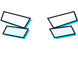

MEMENTO MORI
DARK HOUR
PORT ISLAND // SECTOR 04 · 34.6697° N, 135.2145° E
TARTARUS // 0:00 · S.E.E.S. FIELD OVERLAY
NEXT FULL MOON
T-08D 12H
11
/
05
THU
▸
AFTER SCHOOL

NOW PLAYING // S.E.E.S. AUDIO
COLOR YOUR NIGHT
ATLUS SOUND TEAM